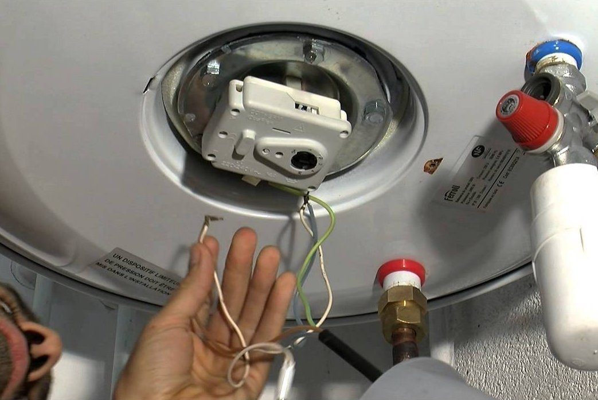

En France, l'eau chaude sanitaire que nous utilisons dans nos logements principalement pour se laver et faire la vaisselle à la main a commencé à se démocratiser après-guerre et est aujourd’hui une évidence. Il existe une multitude de moyens différents de chauffer l’eau. Le système peut être couplé au chauffage central du logement comme une chaudière (fioul, gaz, bois, pellets, etc) ou être un système indépendant. La production peut être instantanée ou par accumulation dans un ballon d’eau chaude. Généralement c’est une simple résistance électrique qui chauffe et maintient chaude l'eau contenue dans le ballon.
Historiquement, c’est cette solution qui est la plus courante en France. En 2016 on comptait environ 17 millions d’unités installées et 1.5 millions d’unités vendues dans le pays. Ces systèmes sont apparus dans un monde où l'énergie était abondante et bon marché et où l'état d'esprit général n'était pas orienté vers la sobriété. Aujourd'hui le contexte est différent. Le prix de l'énergie augmente et les enjeux climatiques sont devenus une préoccupation un peu plus importante. L'empreinte des chauffe-eaux électriques est rarement un sujet de discussion en comparaison du chauffage des habitations ou du transport par exemple. C'est pourtant un poste de consommation important dans un logement mais comme il est souvent noyé dans une facture d'électricité globale et non détaillée, il est facile de l'oublier ou de ne pas en avoir conscience. Il peut y avoir beaucoup de gaspillage d'énergie au niveau d'un chauffe-eau. Comme on ne peut rien mesurer, on a tendance à beaucoup sous-estimer le surdimensionnement de la cuve et l'importance des pertes statiques.
Les pertes statiques désignent l'énergie thermique perdue par dissipation par le chauffe-eau lorsqu'il est en mode veille, c'est-à-dire lorsque l'eau est chauffée mais non utilisée. Elles sont bien sûr inévitables dans ce type de système. Mais il existe pourtant des moyens pour agir dessus et les limiter. Voici donc quelques constats et réflexions sur ce que vous pouvez modifier pour optimiser la consommation de votre chauffe-eau électrique :
La consommation électrique totale d'un chauffe-eau est très variable d'un cas à l'autre mais en moyenne on estime qu'un chauffe-eau consomme autour de 1500 kWh par an ce qui représente environ 40% de la facture d'électricité d'un logement (qui ne se chauffe pas à l'électricité). La part des pertes statiques dans cette consommation est estimée à ~30% soit environ 500 kWh par an. Malheureusement, dans la plupart des installations existantes il est impossible de connaître la part d'électricité dédiée au chauffe-eau. Il est difficile d'améliorer quelque chose qu'on ne connaît pas. Heureusement les choses changent et les constructions neuves d'habitations doivent respecter une réglementation thermique. Depuis 2011, on impose l'installation d'un dispositif permettant de consulter la consommation électrique de certains circuits clairement identifiés (chauffage, climatisation, production d’eau chaude sanitaire, etc). Pour rappel, être équipé du compteur Linky ne suffit pas à être en capacité de mesurer la consommation de chaque appareil électrique individuellement. Pour ce faire, il est toujours nécessaire d'installer un dispositif additionnel dédié et il existe plusieurs technologies. Les plus simples à mettre en œuvre sont :

La gestion de la température de stockage est un point clé car elle influe directement et de manière importante sur la consommation électrique. Malheureusement celle-ci est généralement très mal maîtrisée. En voici quelques raisons.
D'abord parce que l’immense majorité des chauffe-eaux n’indique tout simplement pas cette température. On ne peut généralement pas consulter la température réelle de l'eau contenue dans un chauffe-eau. Les fabricants n'offrent qu'un moyen de réglage imprécis grâce à un thermostat gradué de 1 à 5 et situé à un emplacement peu accessible. Dans le parc français, environ 75% des thermostats sont du fabricant COTHERM (les principaux concurrents sont Thermowatt et tec kit). Le fabricant positionne le réglage des thermostats au maximum en sortie d’usine. De part leur emplacement, les thermostats sont en effet difficilement accessibles, les graduations sont peu lisibles et les correspondances avec des températures réelles sont assez théoriques au regard des constatations faites sur le terrain. Il faudrait ajouter systématiquement un affichage de la température de consigne en façade, avec la possibilité de la modifier facilement avec des boutons ergonomiques +/- et dans une large plage de températures. Même si ce n'est pas parfait, on peut pallier ce manque en ajoutant un simple thermomètre de plomberie à la sortie du chauffe-eau.
Ensuite parce qu'il y a un manque cruel d'informations quant aux recommandations sur la température de consigne. Les recommandations sont difficiles à se procurer et relativement variables d'un document à l'autre. Surtout aucun détail ni aucune source scientifique n'est généralement disponible. Il existe effectivement un risque sanitaire lié au développement de bactéries dans l'eau chaude et stagnante du ballon, mais celui-ci est mal documenté à ma connaissance. Dans ce but, on recommande habituellement de maintenir la température de consigne très élevée et le chiffre de 65°C revient le plus souvent. Généralement c'est un professionnel qui effectue ce réglage lors de l'installation. Pour avoir la conscience tranquille et éviter les problèmes, il a tendance à plutôt surdimensionner la température de consigne. Conserver en permanence une eau aussi chaude ajoute un surcoût important pour l'utilisateur. Une décision prise rapidement et discrètement mais avec de grandes conséquences au long terme car elle est invisible et ne sera probablement plus jamais modifiée jusqu'à la fin de vie de l'appareil.
Il existe pourtant une façon de résoudre ce problème assez facilement si le chauffe-eaux permettait de programmer régulièrement des cycles de montée en température temporaire (aussi chaud que nécessaire) de quelques minutes seulement pour tuer les bactéries. On pourrait ajuster la fréquence de ces montées en température "flash". Cela permettrait de régler la température de consigne le reste du temps le plus bas possible par rapport aux besoins réels de consommation. Malheureusement la possibilité d'automatiser cette procédure n'existe pas sur les chauffe-eaux qu'on trouve dans le commerce.
Les chauffe-eaux sont exposés à la formation du tartre, qui en est une cause majeure de dysfonctionnements et de pannes. Le tartre se forme principalement à partir des minéraux dissous dans l'eau (principalement le calcium et le magnésium). Lorsque l'eau est chauffée, ces minéraux se déposent sous forme de carbonate de calcium, formant le tartre. La vitesse de formation du tartre augmente avec la température. Plus l'eau est chauffée, plus le carbonate de calcium précipite rapidement. À des températures supérieures à 55-60 °C, la formation de tartre s'accélère considérablement. Une couche de tartre sur la résistance ou au fond de la cuve ralentit le transfert de chaleur, obligeant le chauffe-eau à consommer plus d'énergie pour chauffer l'eau et à long terme générer des défaillances et favoriser la corrosion de la cuve. Il existe des dispositifs spéciaux pour limiter la formation du tartre sur certains chauffe-eaux mais ceux-ci s'usent avec le temps. En limitant la température de consigne on peut réduire la formation de tartre et allonger la durée de vie de son matériel.
La température de l’air ambiant autour du chauffe-eau est souvent oubliée mais joue un rôle majeur dans les pertes statiques. Trop souvent le ballon est placé dans un endroit froid comme un garage, une cave, un grenier ou un cellier. Quand c'est possible, il faut le placer dans la zone chauffée du logement pour réduire le différentiel de température. Gardons à l'esprit que l'été, le chauffe-eau pourra produire de la chaleur indésirable dans ce local.
Les fabricants n’isolent pas assez les chauffe-eau. Il existe bien un système de notation de la performance des appareils qui aide à la comparaison lors de l'achat. Mais le système est assez rudimentaire et n'incite pas les fabricants à augmenter suffisamment l'épaisseur des isolants. Pour faire des économies, ils font le minimum pour atteindre la classe énergétique visée. Tous les chauffe-eaux du marché sont aujourd’hui isolés par 32 à 38mm de polyuréthane sans isolation complète de la trappe de visite au niveau du thermostat. Pour une installation standard, une isolation renforcée (70mm au lieu de 35mm) permettrait un gain moyen autour de 200kWh par an. Il est possible de rajouter de l'isolant sur un chauffe-eau existant pour améliorer ses performances. Attention, il y a plusieurs précautions à prendre pour la sécurité de l'installation et pour que celle-ci soit le plus efficace possible.
La majorité des installations ne dispose d'aucun moyen pour mesurer la consommation effective d'eau chaude. Pourtant savoir précisément combien d'eau est utilisée au quotidien est très instructif. Combien de litres pour une douche et quelle est la température de l'eau ? Combien pour faire la vaisselle ? Pour le savoir, il suffit d'installer pour une somme modique un simple compteur. Le plus efficace est de mesurer directement au point de puisage comme dans la douche par exemple.

Le dimensionnement du réservoir est un point crucial. Il est important de ne pas surdimensionner la cuve. En effet, plus la cuve est grande, plus il faut d'énergie pour la maintenir à température. L'objectif est de dimensionner la cuve au plus près des besoins réels du logement mais c'est un exercice difficile. L'eau que l'on souhaite utiliser est bien moins chaude que l'eau contenue dans le ballon. La quantité totale d'eau chaude disponible au robinet est très difficile à estimer avec précision. Elle dépend de plusieurs facteurs comme : la température de l'eau froide du réseau, la température de consigne dans le ballon, la taille du ballon. Dans le ballon, l'eau chaude puisée est remplacée immédiatement par de l'eau froide. Le mélange à l'intérieur du ballon n'est alors plus uniforme mais aura tendance à baisser progressivement au fur et à mesure du puisage avant d'être réchauffé jusqu'à la température de consigne.
En laissant de côté ce phénomène, pour un chauffe-eau d'une contenance de 100 litres chauffée à 55°C et avec une eau sur le réseau d'eau froide à 15°C, on peut estimer qu'il est possible de puiser environ 160 litres d'eau à 40°C. Pour dimensionner correctement la cuve, il faudrait estimer correctement la quantité d'eau mitigée à 40°C que l'on souhaite avoir disponible. Même approximative cette information est rarement mentionnée notamment au moment critique, c'est-à-dire lors de l'achat. Un professionnel ne prendra pas le temps de faire ces calculs et surtout le risque de sous dimensionner la cuve et voir des clients insatisfaits.
On utilise plutôt des barèmes arbitraires qui peuvent être très éloignés de la réalité. Une fois installé, on ne dispose le plus souvent d'aucun moyen de vérifier que son chauffe-eau est surdimensionné, ni d'estimer précisément l'importance de ce surdimensionnement. Il n'est pas rare de conseiller un chauffe-eau de 100 litres à une personne seule et le chiffre de 50 litres par personne et par jour revient régulièrement. Pour donner un ordre de grandeur, il est parfaitement possible de se doucher avec moins de 15 litres d'eau mitigée ce qui ne puiserait qu'environ 10 litres dans la cuve. On oublie souvent de dire que l'effet saisonnier est important. Lors des saisons chaudes comme le printemps ou l'été, les besoins varient considérablement pour un logement. Toute une partie de l'année, on prend des douches moins chaudes ce qui réduit la quantité d'eau nécessaire. Et la température de l'eau froide du réseau est plus élevée ce qui augmente la quantité d'eau chaude disponible.
La part du chauffe-eau électrique sur la facture d'électricité est de plusieurs centaines d'euros par an. On chauffe trop d'eau qu'on n'utilise pas et à une température trop chaude. En faisant quelques ajustements, on peut réduire considérablement sa facture d'électricité :